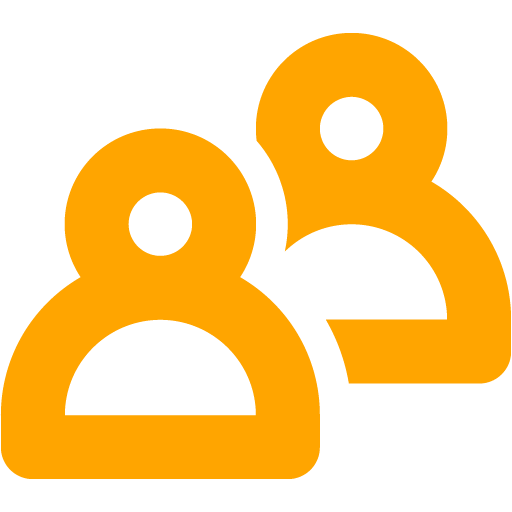

CyberLions Italian Community
Your Gaming Family
Il nostro Server
Ti diamo il benvenuto nel nostro server TeamSpeak! Potrai connetterti con i tuoi amici e comunicare in tempo reale mentre affronti i match più competitivi online.
Non devi fare altro che scaricare il client di TeamSpeak e potrai connetterti in tutta sicurezza e alla massima qualità di comunicazione.
Per qualsiasi richiesta potrai contattare un membro dello Staff, che sarà facilmente identificato dalla relativa icona nell’apposita sezione, ti aspettiamo!
La sicurezza è importante
 Noi di CyberLions pensiamo che la sicurezza non sia affatto un aspetto da sottovalutare, per questo lavoriamo attivamente ogni giorno al mantenimento del server e della nostra infrastruttura al fine di garantire la protezione contro le ultime vulnerabilità e una facile e sicura comunicazione.
Noi di CyberLions pensiamo che la sicurezza non sia affatto un aspetto da sottovalutare, per questo lavoriamo attivamente ogni giorno al mantenimento del server e della nostra infrastruttura al fine di garantire la protezione contro le ultime vulnerabilità e una facile e sicura comunicazione.
La crittografia per la comunicazione è attiva di default in ogni canale, non dovrai fare altro che connetterti al nostro server e pensare solo a divertirti, al resto pensiamo noi.
I servizi aggiuntivi
Il nostro Server è ricco di servizi aggiuntivi, che potrai richiedere diventando membro della community e iscrivendoti al Forum (maggiori informazioni nella sezione Contattaci).
Sono già disponibili MusicBot per i membri e stanze private con le impostazioni che meglio preferisci, connettiti e richiedi l’accesso ora
Il nostro forum
Clicca qui per accedere al forum
Lo stato dei servizi
Clicca qui per vedere lo stato dei servizi
F.A.Q.
Sicuramente avrai molte domande, speriamo tu possa trovare alcune delle risposte qui.
- Quale è l’indirizzo del server TeamSpeak? L’indirizzo del nostro server è ts.cyberlions-ita.eu.
- L'accesso al server è consentito a chiunque? Sì, l'accesso al server TeamSpeak è consentito a chiunque senza alcun limite di tempo o orario, salvo la capacità della nostra infrastruttura. Tuttavia non sono consentite connessioni tramite VPN o Proxy, quindi se hai bisogno di utilizzare questi metodi ti invitiamo a contattarci.
- Ci sono limiti di tempo nella connessione del server? Assolutamente no, il server è online 24/7 (salvo manutenzioni o malfunzionamenti). Sei libero di connetterti quando vuoi e per quanto tempo preferisci.
- La connessione è sicura? Manteniamo sempre la nostra infrastruttura aggiornata contro le ultime vulnerabilità per assicurare stabilità e sicurezza. Ogni comunicazione è cifrata con AES-256 in ogni canale, ed è impossibile risalire a quanto scritto in un messaggio o comunicato verbalmente.
- Posso far connettere bot personali o altri utenti? Puoi portare tutti i tuoi amici, mentre per software o bot sviluppati da terzi è gradita la richiesta ad un membro dello Staff.
- Ho un problema con il server, come posso fare? Se hai problemi con la connessione al server ti invitiamo a visitare il sito ufficiale di TeamSpeak, se invece riscontri malfunzionamenti nell’utilizzo del servizio ti invitiamo a segnalarlo tempestivamente ad uno dei nostri contatti.
- Ho un problema con un utente, come posso fare? Se hai problemi con un utente, cerca di risolverli civilmente nel rispetto della community, se ciò non è possibile per qualche motivo, sei invitato a contattare un membro dello Staff che interverrà e agirà di conseguenza se necessario.
Dove puoi contattarci:
-
Email
-
Social Network
-
Inoltre...
Non dimenticare il canale Telegram dedicato
Aiutaci a migliorare
Puoi aiutarci a migliorare compilando questo form.